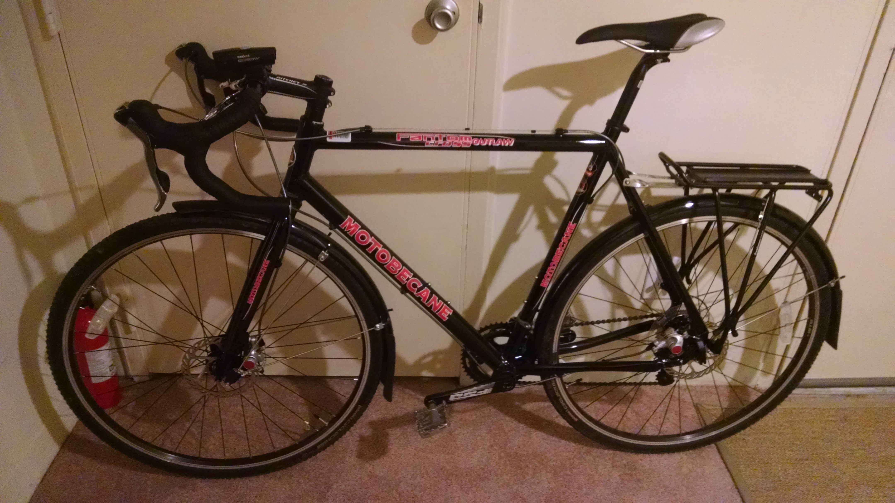

04/08/2015 edit: Just starting my 6th month of commuting, and I've put a little over 1,300 miles on the Motobecane, most of which are commuting -- though I have gotten a few longer rides in just for fun! We've moved, so my commute is now 7.5 miles each way, up from 5.5 miles. No major issues with anything yet! And I'm still feeling stronger all the time. I have purchased some additional gear, which I have added to the list below. I have also provided some small updates on the gear already listed.
Today I put my 200th mile on my new bicycle.
Mid-way through last month, I decided I wanted to start biking to work. And so I spent a few days researching like crazy trying to decide what type of bike to ride. I landed on the 2015 Motobecane Fantom Cross Outlaw. Light aluminum frame (no worries about rust), decent Shimano shifters/derailleurs, all-weather disk brakes, and braze-ons for fenders and racks. A great all around bike, and especially great for my short but hilly commute. And all for a good price.
It is now November, and getting a little chilly... so one might ask, why now, of all times, would one want to start commuting to work via bicycle?
My reasoning revolved around the following thoughts:
- I'm fully convinced that cycling (especially if we sell one of our two vehicles) will be a wise financial and physical investment.
- If I make it through the winter, I think it's safe to say that I'll stick with cycling.
- I want to be outside more/fend off cabin fever.
- It's good exercise, which is something I've been struggling with since finishing college.
I've biked every day so far this month except for four. Two of those were rest days. I didn't have time to bike another. And the last day... I wussed out because it was really cold and raining hard. But, it's been awesome. It's been in the mid-20's outside the past few days... and I love it. Every day feels like an accomplishment, and almost every day I am a little faster. I get to breathe more fresh air, see more trees, and feel more wind. It's wonderfully satisfying, and I look forward to my ride each morning more than I ever thought I would.
Granted, I'm less than a month in... so maybe the thrill is in the newness of it all and will wear off with time... but I doubt it. :)
I bought the following equipment to make commuting easier -- after all, if it's miserable experience, I'm not sure I'd be able to will myself do it long-term.
- A bike stand - Purchased Oct. 2014. Awesome for assembling and tuning my bike. Would have been a real pain without. 04/09/15 update: Still loving this thing. Use it regularly to adjust derailleurs, change tires, and assemble my wife's bike.
- Multi-tool - Purchased Oct. 2014. Highly recommended around the Internet... figured this would be good to have for any quick adjustments on the road. 04/09/15 update: Simple, solid tool -- I keep it in my Topeak panniers at all times.
- Combo pedals - Purchased Oct. 2014. I don't have or wear cleats yet, and probably won't 'til the summer at the soonest... so these seemed like a future-proof option. 04/09/15 update: Haven't tried clipless yet. These pedals are slightly annoying sometimes because gravity does not bring the platform side to the top -- I usually have to flip it with my foot. Other than that, I really like these pedals. No significant foot slippage.
- Helmet mirror - Purchased Oct. 2014. Yep, it makes me look like a goof... but it is nice to not have to twist all the way around on my bike to see behind me. I got the compact version, but wish I would have gotten the regular one. The compact version feels a little too small/short. 04/09/15 update: Still wish I would have gotten the regular size. I like having the helmet mirror, though -- I find myself reflexively looking up and to the left to see behind me even when I'm not wearing my helmet. :)
- Fenders - Purchased Oct. 2014. Great for those puddly and/or slushy days. These are awesome. 04/09/15 update: Have learned that these don't keep my feet completely free of spray when riding through puddles or slushy slush... but that may be partially my own fault (non-optimal adjustment), and it still beats having no fenders by a long shot.
- Rack and bag/panniers - Purchased Oct. 2014. Rack seems solid, and the bag's panniers are large enough for my laptop/s. I've heard this bag doesn't hold up the best, and it's not waterproof without the rain cover... just water resistant. But, so far, I've been very happy with it. 04/09/15 update: No updates/concerns about the rack. I use the bag daily -- zippers are all still in good shape. Only wear is some fraying on the handle on top... seems to be purely asthetic, at least at this point.
- Lights - Purchased Oct. 2014. So I can see and be seen. These lights are really bright, and seem pretty slick so far. The SweetHome likes them, too. 04/09/15 update: No complaints -- lights are bright, and seem to have pretty good battery life.
- Garmin Edge 510 - Purchased Jan. 2015. I bought this used on eBay, and it came with a Garmin heart rate monitor, as well as the Garmin speed/cadence sensor. I wanted this because I was curious to see what my cadence was (seems to average around 88-90 RPM most of the time, which was pleasantly surprising)... and because I was getting tired of using Strava on my phone. I also wanted to give its navigation capabilities a try. It's proven itself useful, especially on some of the longer non-commute rides I've done. I wanted the 510 model because it has Bluetooth (for automatic uploading of rides to Strava, amongst other things)... my only complaint is that the automatic uploading sometimes doesn't work. I've not yet updated the firmware to the latest revision (v3.50, I believe), though, which supposedly addresses some of the sync/auto-upload issues. Regardless, it's really not a big deal.
- Hand pump - Purchased Dec. 2014. Bought this particular pump because of its solid reviews and light weight. Its saved my butt the few times I've had flats. I like that it has a flexible hose, and I like that the hose screws on to my Presta valves (no slipping off).
- Floor pump - Purchased Dec. 2014. My cheap-o floor pump from Target was literally falling apart, and this pump seemed like a solid replacement. It was, and is. Seems well worth the nominal price.
- Steel-core tire levers - Purchased Dec. 2014. I kept breaking my plastic tire levers (maybe I suck at changing tires?), so I got these. I've been happy with them!
- Water bottles and water bottle cages - Purchased Feb. 2015. Ordered 2 of each. Bottles fit into the cages well. Cages are light and seemingly durable. No comment on the bottles' insulation properties yet.
- Chain cleaner and chain wear indicator - Purchased Feb. 2015. Chain cleaner seems to work well enough for quick cleanings, but it doesn't leave you with a brand-new-shiny sort of chain. Because of this, it'd probably be best if I completely removed/soaked the chain in degreaser periodically. Chain wear indicator -- what can I say? Simple enough tool.
- GORE Jacket, shoe covers, and gloves, and some Craft Lobster Claw mittens - Purchased Feb. 2015. Was not staying warm enough during the cold snaps we were having, so I needed some extra clothing. Bought these things at my local bike shop. The jacket is wonderful (warm and cuts the wind, yet leaves me far less sweaty than before), and the shoe covers make a world of difference as far as foot warmth goes. I layer the thing GORE gloves with the Craft mittens -- not as big of a difference in hand warmth as I expected, but it is noticeable. I will try to provide links to these items sometime soon.
Some of the things mentioned in the post may or may not warrant a more detailed post in the future, especially as things wear and age -- I'm interested in the longevity and durability of things like the bag, and the lights. They get used every day.
Anyway, you could have the same setup for less than $1,500 up front. I bet that's cheaper than any car you're looking at. Quite possibly more fun, too. :)